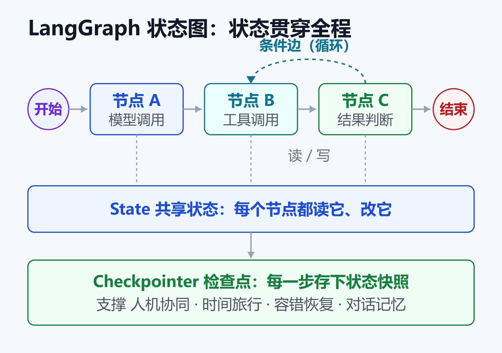
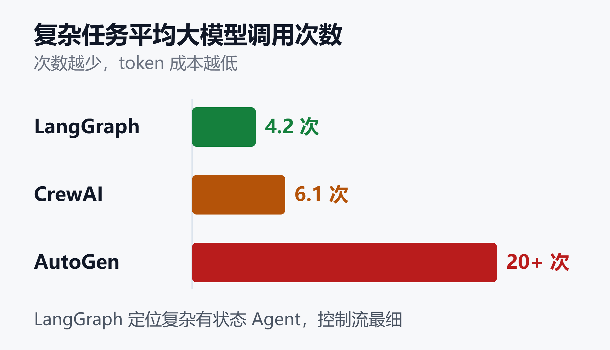

LangGraph 深度解析：从状态图原理到 Klarna 8500 万用户的生产落地
Klarna 的 AI 客服助手服务着 8500 万活跃用户，把客户问题的平均解决时长压低了 80%。这套系统的底座，是一个叫 LangGraph 的开源框架。
同样在生产环境里跑着 LangGraph 的，还有 LinkedIn、Uber、Replit、Elastic 和摩根大通。2025 年 10 月 22 日，它发布了 1.0 GA，GitHub 星标突破 3 万。
一个耐人寻味的信号是：曾经风头很盛的 AutoGen 进入了维护模式，OpenAI 的 Swarm 项目被归档，而 LangGraph 却把 LangChain 自己的 Agent 也收编到了自己脚下。这篇文章把 LangGraph 讲透：它的图结构原理是什么、四大核心能力从哪来、1.0 之后发生了什么、大厂拿它做什么，以及你到底该不该选它。
一、为什么 Agent 需要「图」
要理解 LangGraph，得先理解它想解决的问题。
早期的 LangChain 用「链（Chain）」把步骤串起来：检索 → 拼提示词 → 调大模型 → 输出。这是一条直线，本质是有向无环图（DAG），走完就结束。
但真正的 Agent 不是直线。它要反复思考、调用工具、根据结果决定下一步，可能循环很多轮才收敛。它还要能中途暂停，等人确认再继续；要能记住上一轮说了什么；出错了要能从断点恢复，而不是从头再来。
这些需求，线性的链都满足不了。LangGraph 的答案是把工作流建模成一张有向图，并且这张图允许有环。节点是处理步骤，边决定状态怎么流动，环让 Agent 可以「想不清楚就再想一轮」。
官方对它的定位很克制：一个底层的 Agent 编排框架与运行时，只专注编排本身，不替你做太多封装。控制权尽量交还给开发者。
二、状态图的五个核心零件
LangGraph 的心脏是 StateGraph，一个声明式的工作流引擎。理解它，只需要理解五个零件。

如上图，一次执行由「状态」贯穿始终，节点读写状态、边决定走向，检查点在每一步存下快照。下面逐个拆开。
2.1 State（状态）
用 TypedDict 定义的一份共享可变数据，是整张图的「记忆总线」。每个节点都读它、改它，再把新状态传给下一个节点。状态里通常装着对话历史、中间结果、工具返回值等。
2.2 Node（节点）
一个节点就是一步处理：可能是一次大模型调用、一次工具调用、一次检索、一次人工审核，或一个纯粹的控制决策。节点接收当前状态，返回对状态的更新。
2.3 Edge（边）
边决定状态从一个节点流向哪里。分两种：
- 普通边：固定地从 A 走到 B。
- 条件边：根据当前状态动态选择下一个节点。分支和循环都靠它实现。
2.4 Checkpointer（检查点）
这是 LangGraph 区别于普通工作流引擎的关键。编译图时挂上一个 checkpointer，它就会在每个 super-step（超步）把整张图的状态存成快照，按 thread（会话线程）组织。
检查点有三种常见实现，按用途区分：
| 实现 | 适用场景 |
|---|---|
| MemorySaver | 单元测试 |
| SqliteSaver | 本地开发 |
| PostgresSaver | 生产环境 |
2.5 Runtime（运行时）
底层运行时借鉴了谷歌的 Pregel 消息传递计算模型。它把执行切分成一个个超步，每个超步内多个节点可以并行推进，超步之间统一同步状态。这套模型让 LangGraph 天然支持并行分支和可靠的状态演进。
三、检查点带来的四大能力
检查点不只是「存个进度」。因为状态被逐步持久化，四个生产级能力自然长了出来。
3.1 人机协同（Human-in-the-loop）
当模型打算做一件有风险的事——比如写文件、执行 SQL、发起支付——可以用 interrupt() 把执行暂停，交给人审核。人点了确认，再从断点恢复。这对高风险场景至关重要，也是纯提示词工程做不到的。
3.2 时间旅行调试
因为每一步都有快照，你可以回到任意一个历史检查点，修改当时的状态，然后从那个点重新执行。调 Agent 逻辑时，这比反复从头跑一遍省太多时间。
3.3 容错恢复
长任务跑到一半崩了，不必从零开始。从最近的检查点恢复即可，中间已完成的昂贵调用不会白费。
3.4 对话记忆
短期记忆本质就是持久化的状态：会话线程可以随时挂起、随时续上。跨会话的长期记忆则交给 Store 组件。子图会自动继承父图的 checkpointer，不用重复配置。
四、1.0 GA 之后的「架构反转」
2025-10-22 的 1.0 GA 是个分水岭。官方称它是「持久化 Agent 框架领域的第一个稳定大版本」。
更值得注意的是版本之后的结构变化：LangChain 自己的 Agent 现在也跑在 LangGraph 之上。老的 create_react_agent 正在迁移到新的 create_agent。换句话说，LangGraph 从 LangChain 的一个子库，变成了整个生态的运行时底座。
配套的还有几个变化：
- 新增
CommandAPI 和interrupt()，让「中断—确认—恢复」写起来更顺。 - 推出 Functional API，用更传统的编程范式也能用上持久化、记忆、流式这些能力，不必都画成图。
- 原来的 LangGraph Platform 在 2025 年 10 月改名为「LangSmith Deployment」，把托管部署和可观测收进了 LangSmith 体系。
一个信息务必在这里说清：托管的 Agent Server 会自动帮你处理检查点持久化，不用手写 checkpointer；但如果你自建部署，就得自己选 Postgres 还是 SQLite。
五、大厂拿它做了什么
抽象讲原理没有说服力，看真实落地。
Klarna 是最亮的样本。它的 AI 助手用 LangGraph 加 LangSmith 搭成，覆盖 8500 万活跃用户的客服场景，把平均解决时长降低了 80%。客服是典型的多轮、要查工具、要按状态分支的场景，正好吃到状态图的红利。
LinkedIn、Uber、Replit、Elastic 都在生产环境用它构建实际业务。Replit 用它做代码 Agent，Uber 的场景则更偏内部工具链。摩根大通这样的金融机构也进入了官方公开的信任名单——金融场景对「可审计、可中断、可恢复」的要求极高，恰是 LangGraph 的强项。
这些案例的共性很清楚：任务复杂、多步、需要人工兜底、出错代价高。越是这种场景，图结构和检查点的价值越大。
六、2026 年的框架格局
LangGraph 不是唯一选择。2026 年的 Agent 框架格局已经分化，各有各的甜区。

如上图，不同框架的定位差异很大，LangGraph 占据的是「复杂有状态、要精细控制流」这一格。一个常被引用的效率数据是：完成同类复杂任务，平均大模型调用次数 LangGraph 约 4.2 次、CrewAI 约 6.1 次、AutoGen 超过 20 次——调用次数直接换算成 token 成本，差距很实在。
各框架的一句话定位：
- LangGraph：复杂有状态 Agent，控制流最细。
- CrewAI 1.0：角色制团队协作，上手快。
- Microsoft Agent Framework：2026 年 4 月合并 Semantic Kernel 与 AutoGen。
- OpenAI Agents SDK：轻量、托管工具调用。
- Google ADK：多语言企业级。
需要提醒的是格局仍在动：AutoGen 已进入维护模式，Swarm 被归档，Pydantic AI V2 和 LlamaIndex Workflows 1.0 都在 2026 年年中转稳。选型时别只看一时热度。
七、上手路径：三步跑通第一个状态图
原理讲完，很多人卡在「怎么开始」。LangGraph 的最小闭环其实只有三步。
第一步，定义状态。用 TypedDict 声明这张图要传递什么数据，这是所有节点共享的契约。
第二步，写节点函数。每个节点是一个普通 Python 函数，接收状态、返回要更新的字段。一个最小的图大概长这样：
graph = StateGraph(State)
graph.add_node("chat", call_model)
graph.add_edge(START, "chat")
graph.add_edge("chat", END)
app = graph.compile()
第三步，加边和检查点。用 add_edge 连固定流转，用 add_conditional_edges 做分支，编译时传入 checkpointer 就获得了持久化。开发期用 SqliteSaver，上生产换 PostgresSaver，代码几乎不用改。
想要人机协同，就在需要卡点的节点里调 interrupt()；系统会在此暂停，等外部传入决策再从断点恢复。这套「先跑通最小图，再逐步加边、加工具、加卡点」的渐进路径，是官方推荐的落地方式，比一开始就设计复杂拓扑要稳得多。
如果连图都不想画，1.0 之后的 Functional API 允许你用装饰器把普通函数标成任务，同样能用上持久化、记忆和流式，适合从传统代码平滑迁移。
八、什么时候该选，什么时候别选
框架没有银弹，LangGraph 也有明确的边界。
适合选它的情况：
- 任务多步、要循环、要按中间结果动态分支。
- 需要人工审核卡点，或需要从断点恢复的长任务。
- 对可观测、可审计要求高，愿意配 LangSmith。
- 团队能接受底层 API 带来的学习成本。
不建议选它的情况：
- 只是一次性的问答或简单的 RAG，用链甚至直接调 API 就够了，上状态图是过度设计。
- 想快速拼一个多角色协作 Demo，CrewAI 这类更省事。
- 团队没有工程化能力承接样板代码和持久化基础设施。
一句话：LangGraph 的成本是学习曲线和样板代码，收益是控制力和生产可靠性。场景越复杂、越接近生产，这笔账越划算；场景越简单，它越显得重。
小结
LangGraph 把 Agent 从「一条走完就结束的链」升级成「可循环、可分支、可持久化的状态图」。五个零件——状态、节点、边、检查点、Pregel 运行时——撑起了人机协同、时间旅行、容错恢复、对话记忆四大能力。
1.0 GA 之后它成了 LangChain 生态的运行时底座，Klarna 8500 万用户、80% 提速这样的数据，证明了它在复杂生产场景里的价值。但它不是万能钥匙：简单场景用它是负担，复杂场景用它才划算。选型的关键，永远是先看清自己的场景复杂度，再决定要不要为控制力付出这份工程成本。
免责声明
本文内容基于公开资料整理，仅供技术学习与选型参考，不构成任何投资、采购或商业决策建议。文中提及的框架版本、企业案例与数据均来自公开来源，可能随时间变化，请以官方最新信息为准。
参考来源
- LangChain 官方文档 —— LangGraph overview
- LangChain 官方博客 —— Designing an Agent Runtime from first principles
- LangChain 官方文档 —— Checkpointers
- LangChain 官方文档 —— Persistence
- LangChain 官方页面 —— Built with LangGraph（Klarna 案例）
- Atlan —— What Is LangGraph? State, Agents & Production Use Cases 2026
- MetaCTO —— A Developer's Guide to LangGraph
- Hashnode —— 2026 AI Agent Frameworks Compared: LangGraph vs CrewAI vs MS Agent Framework vs Pydantic AI
- note.com —— AI Agent Development Framework Comparison（调用次数数据）
相关阅读
- 企业 AI Agent 部署指南 2026
- 多智能体协作框架指南 2026
- Langfuse LLM 与 Agent 可观测性指南
- MCP vs A2A：AI Agent 协议深度对比 2026
- 智能客服 Agent 全景 2026
推荐搭配装备
善其事，利其器。以下硬件能最大化你的AI体验👇
🔗 通过以上链接购买可支持本站持续运营 🙏